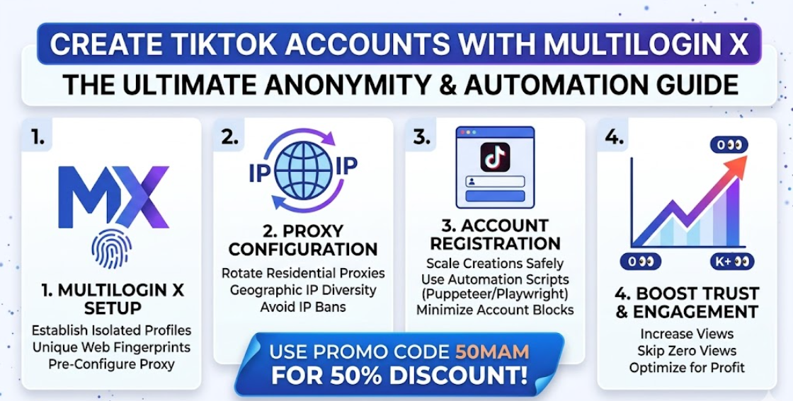
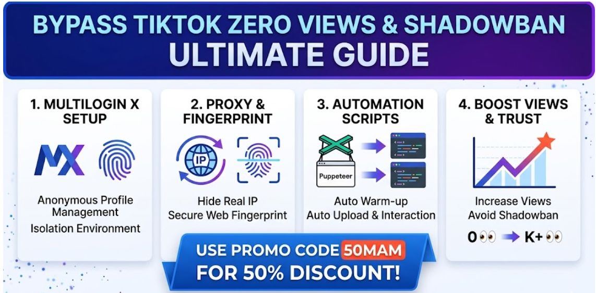
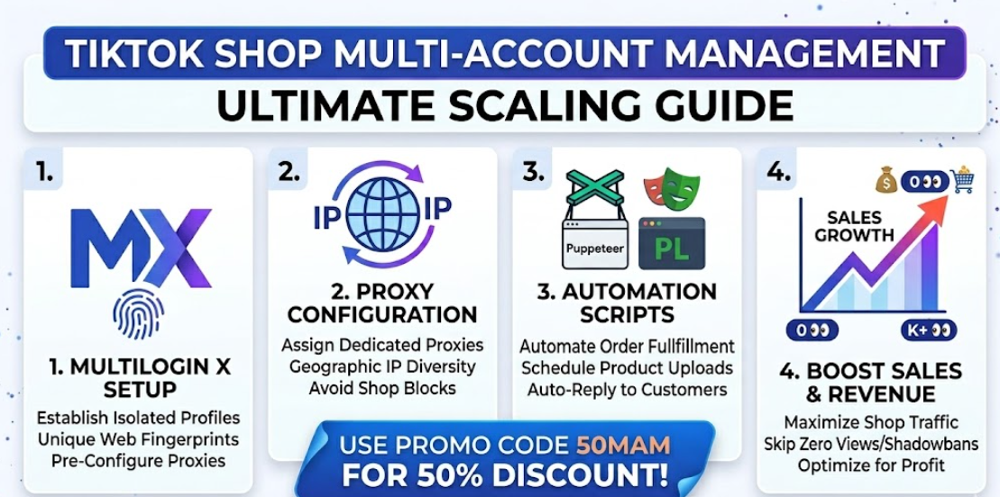

Create stealth TikTok accounts with enterprise-grade isolation
Protect device & network signals, manage multiple accounts, and reduce the risk of zero-views and shadowbans. Limited-time 50% OFF with code 50MAM.
Affiliate link: we may earn a commission for purchases made through this link.
What you'll learn
- Why device & network signals affect TikTok visibility.
- Account hygiene best practices for scaling safely.
- High-level guidance on proxies and browser isolation.
Resources
MultiAccountManager: giải pháp quản lý đa tài khoản an toàn và bền vững
Với người làm affiliate, social media, eCommerce hoặc agency, nhu cầu vận hành nhiều tài khoản cùng lúc là điều gần như bắt buộc. Tuy nhiên, nếu không có quy trình và công cụ phù hợp, rủi ro checkpoint, xung đột phiên đăng nhập hoặc giới hạn tính năng sẽ tăng lên đáng kể.
Một nền tảng được nhiều người quan tâm hiện nay là MultiAccountManager. Công cụ này tập trung vào việc tách biệt môi trường làm việc cho từng tài khoản, từ đó giúp tối ưu độ ổn định khi vận hành nhiều profile cho các dự án khác nhau.
Lợi ích nổi bật khi dùng công cụ quản lý đa tài khoản
- Tổ chức tài khoản theo từng chiến dịch, dự án hoặc khách hàng.
- Giảm rủi ro liên kết chéo dữ liệu giữa các tài khoản.
- Tăng hiệu suất làm việc cho cá nhân và team vận hành.
- Dễ mở rộng quy mô khi số lượng tài khoản tăng theo thời gian.
Nếu bạn muốn tham khảo thêm thông tin, tính năng và hướng dẫn triển khai, hãy truy cập trang chính thức tại https://multiaccountmanager.com/.
How to avoid Zero Views

Zero views on newly created accounts often result from signals associated with devices, browsers, or networks. We point to established tools and high-level practices to reduce those signals while emphasizing compliant, risk-aware approaches.
FAQ: Creating Multiple TikTok Accounts
What is TikTok farming?
TikTok farming involves creating and managing multiple accounts to scale content reach, often for affiliate marketing or shop management.
How to bypass zero views on TikTok?
Use browser isolation tools like Multilogin to mask device fingerprints and rotate proxies for unique network signals.
Why use mobile proxies for TikTok?
Mobile proxies simulate real mobile connections, improving algorithm trust and reducing shadowban risks.
Is it safe to create multiple TikTok accounts?
When done with enterprise tools and natural activity patterns, yes. Avoid shortcuts that violate TikTok's terms.
Tips for Successful TikTok Farming

- Use unique email addresses and phone numbers for each account.
- Rotate IP addresses regularly with residential proxies.
- Maintain natural posting schedules to avoid detection.
- Monitor account health and adjust strategies as needed.